China Employee Termination: Pre-Mortem Brief for Foreign Employers (Hourly Testing Run)
Key takeaways
- The fastest way to improve China termination outcomes is to run a pre-mortem: assume failure first, then design controls that prevent it.
- Foreign employers usually lose cases through execution drift (evidence, communication, settlement handling), not because they lacked a legal route on day one.
- A Pulse-style pre-mortem briefing helps non-China leadership prioritize risk before employee-facing steps begin.
- Legal route approval and operational readiness are different gates; both must pass.
- Legal depth should remain an appendix while practical prevention controls lead the narrative.
Pulse lead: if this case fails, why will it fail?
This run uses a pre-mortem format. Instead of asking only “what should we do,” it asks “if this case fails in 60 days, what likely caused it?” For foreign clients unfamiliar with China labor/payroll practice, this framing is practical and decision-friendly because it turns abstract legal risk into concrete prevention actions.
The core lesson is simple: a route can look valid in legal review and still fail in execution if the team does not proactively prevent predictable breakdowns.
Plain-language legal and regulatory context first
China’s Labor Contract Law defines termination boundaries and severance rules. The State Council implementation regulations and Supreme People’s Court interpretation shape how disputes evaluate procedural fairness, document reliability, and consistency between employer rationale and execution record. For foreign employers, the business translation is straightforward: legal route, evidence chronology, manager communication, and settlement/payment handling must remain coherent through closure.
When coherence breaks, dispute vulnerability rises, even where route selection initially appeared defensible.
Pre-mortem: seven failure stories and how to prevent them
Failure story 1: “We approved the route, but facts shifted under us.”
What went wrong: Route assumptions were never revalidated after new facts emerged.
Early warning signal: Route memo not updated despite factual changes.
Prevention control: Route revalidation checkpoint required for any fact change affecting route prerequisites.
Failure story 2: “Our file was large, but our chronology was weak.”
What went wrong: Document volume masked core contradictions.
Early warning signal: No owner-verified chronology index; unresolved contradictions near execution.
Prevention control: Mandatory chronology map + contradiction log with SLA before employee-facing action.
Failure story 3: “Manager messaging undermined the case.”
What went wrong: Unscripted statements diverged from route logic.
Early warning signal: Multiple script versions, no final manager briefing evidence.
Prevention control: Single script lock, briefing confirmation, and controlled written summary protocol.
Failure story 4: “Settlement language and payroll math diverged.”
What went wrong: Legal wording and payroll mapping were not synchronized.
Early warning signal: Late clarifications on payout components and timing.
Prevention control: Legal/payroll co-signed itemized worksheet before external commitments.
Failure story 5: “Tax handling became a late-stage surprise.”
What went wrong: Tax assumptions were implicit or changed late.
Early warning signal: Different teams gave different payout/tax explanations.
Prevention control: One tax-treatment note with local-practice validation and aligned employee explanation pack.
Failure story 6: “No one could decide at cutover.”
What went wrong: Decision authority was ambiguous when risk escalated.
Early warning signal: Escalation matrix had names but no active backup authority.
Prevention control: Primary + backup authority confirmation before go-live window.
Failure story 7: “We closed too early.”
What went wrong: Case marked complete at signature without payment proof/archives.
Early warning signal: Closure status changed before reconciliation and file completeness checks.
Prevention control: Closure gate requires signature + payment proof + archive completeness.
Practical implications for foreign employers
- HQ/board: ask for pre-mortem risk controls, not route summary alone.
- Regional HR: convert each failure story into a formal go/no-go condition.
- Payroll/finance: co-own prevention controls for settlement and tax coherence.
- Managers: understand script control is compliance behavior, not communication style.
This model improves both decision speed and defensibility because foreseeable failures are addressed before execution.
Scenario snapshots
Snapshot A: Pre-mortem prevents stale-route execution
New facts emerged after initial approval. Team triggered route revalidation and delayed communication by 24 hours. Outcome: improved legal-operational alignment and lower contest risk.
Snapshot B: Pre-mortem catches settlement mismatch
Payroll detected inconsistent component mapping during pre-mortem check. Team relocked worksheet and revised explanation note pre-meeting. Outcome: fewer post-signature disputes.
Snapshot C: Pre-mortem protects closure quality
Team prevented premature closure by enforcing payment proof and archive checks. Outcome: cleaner audit trail and reduced reopen risk.
Pre-mortem operating SOP (daily)
- Open case with route assumptions and failure-story checklist.
- Score each failure story as low/medium/high risk.
- Assign owner and SLA for medium/high risks.
- Run legal/payroll parallel review on high-risk items.
- Freeze employee-facing steps on unresolved critical risks.
- Execute with exception logging and change control.
- Close only after full closure gate evidence passes.
Required document checklist
- route memo + revalidation trigger rules
- chronology map + contradiction register
- script lock file + manager briefing evidence
- settlement worksheet + tax treatment note
- escalation authority matrix (primary/backup)
- pre-mortem risk log with owner/SLA
- payment proof + reconciliation pack
- closure audit and archive map
Exception playbook
- route assumption breaks → rerun route gate
- chronology contradiction appears → hold and remediate
- script drift event → corrected record + legal review
- settlement/tax mismatch → relock and reapprove
- authority unavailable → activate backup before next step
System implementation notes
Add fields in workflow tooling:
- failure-story risk score (1-7)
- owner, SLA, and resolution timestamp
- route delta log
- script version and acknowledgment record
- settlement lock version + payroll verifier
- closure completeness score
Control rules:
- hard stop on unresolved critical failure stories
- mandatory re-approval on route/script/settlement changes
- immutable logs for risk-state transitions
- weekly dashboard for repeat failure patterns
Governance cadence for foreign teams
- Weekly (30 min): open critical risks, aging, owner accountability
- Monthly (60 min): repeat-pattern analysis, KPI trends, control recalibration
This cadence prevents one-off fixes and creates repeatable quality across entities.
KPI pack for leadership
- unresolved critical-risk count
- risk aging over SLA
- script-drift frequency
- settlement relock rate
- closure lag (signature to verified close)
- post-close reopen rate in 30 days
If two or more KPIs worsen for two consecutive cycles, run mandatory cross-functional recalibration.
Common mistakes and prevention
- Mistake: Treating pre-mortem as optional discussion
Prevention: make it a required pre-action control gate.
- Mistake: Relying on legal route only
Prevention: enforce evidence/communication/settlement co-gates.
- Mistake: Closing at signature
Prevention: proof-based closure gate with audit traceability.
What to do this week
- Launch a one-page pre-mortem template for all active termination cases.
- Define critical-risk auto-hold thresholds.
- Require legal/payroll co-sign before employee commitments.
- Assign backup decision owners for cutover windows.
- Review weekly KPI trends and monthly repeat failures.
- Calibrate city-level overlays with local counsel.
What to watch next
- continued scrutiny on procedural coherence and evidence quality
- ongoing sensitivity around payout clarity and explanation quality
- city-level practice variance requiring periodic control tuning
FAQ
Is pre-mortem required by law?
No. It is an operational governance tool to reduce preventable failures.
Can small teams use this?
Yes. Start with failure stories 1-4, then expand.
Why is this useful for foreign clients?
It translates legal complexity into concrete prevention actions and ownership.
Is negotiated termination always safer?
Not automatically; weak execution controls can still create disputes.
When should external PRC counsel be mandatory?
High-risk unilateral routes, protected-status concerns, restructuring matters, and multi-city complexity.
Legal depth appendix
This brief is anchored in the PRC Labor Contract Law, State Council implementation regulations, and SPC labor-dispute interpretation. Combined, these sources support a practical principle: route legality, procedural fairness, and documentary reliability are assessed together in disputes.
Disclaimer
This content is informational only and does not constitute legal, tax, or employment advice. Seek qualified PRC legal and tax advice for case-specific matters.
Sources
- National People’s Congress — Labor Contract Law of the PRC (English), 2007-12-13: http://www.npc.gov.cn/zgrdw/englishnpc/Law/2007-12/13/content_1384064.htm
- State Council — Implementation Regulations of the Labor Contract Law (Decree No. 535), 2008-09-18: https://www.gov.cn/gongbao/content/2008/content_1124615.htm
- Supreme People’s Court — Interpretation on Labor Dispute Application Issues (Fa Shi [2020] No. 26), 2020-12-29: https://www.court.gov.cn/fabu/xiangqing/243981.html
- China Briefing / Dezan Shira — Employee Termination in China, 2025-10-17: https://www.china-briefing.com/news/employee-termination-in-china/
- Littler — Key Recent Developments in China’s Employment Law, 2024-03-20: https://www.littler.com/news-analysis/asap/key-recent-developments-chinas-employment-law-china-us-comparative-perspective
- PwC Worldwide Tax Summaries — PRC Individual Taxes on Personal Income, 2025-01-15: https://taxsummaries.pwc.com/peoples-republic-of-china/individual/taxes-on-personal-income
Need local employment support in China?
If you need a compliance-first partner for hiring, payroll, and risk controls in China, China-Payroll.com can help evaluate the right setup.
Image Prompt Pack
Create a 16:9 hero image for article title: 'China Employee Termination: Pre-Mortem Brief for Foreign Employers (Hourly Testing Run)'. Scene: global operations team evaluating workforce model options for China market entry. Include motifs: decision matrix, org…